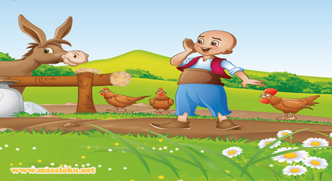

Keloğlan ile Çilli Tavuk

Bir varmış, bir yokmuş, evvel zaman içinde kalbur saman içinde, uzak ülkelerden birinde bizim Keloğlan yaşarmış. Keloğlan kelmiş, keleşmiş ama özellikleri pek bir güzelmiş. İnsanlarla ilgilenir, arkadaşlarına iyi davranır, hayvanları sever fakat çalışmaktan pek hoşlanmazmış. Anası ona ne zaman bir iş buyursa bir bahane uydurur, anası kızınca da oraya buraya saklanır dururmuş.
Günlerden bir gün evin kapısının önünde uyuyup dururken kısa boylu bir çocuk yanına yaklaşmış:
– Hişt Keloğlan, keleşoğlan, annesini üzen oğlaaannn, diye bağırmış. Keloğlan hemen arkasını dönmüş, uykusuna devam etmiş ve bir rüya görmeye başlamış. Rüyasında uzun bir yolda yürüyormuş, yürürken önce bir tavukla karşılaşıyormuş,
Tavuk;
– Ah keloğlan bir bilsen başıma gelenleri, ne desem ne etsem bilemiyorum, olup bitenleri önce sana anlatayım istersen diyerek, tilkilerin kendi kümesleri önünde nasıl gezdiklerini anlatmış durmuş. Keloğlan tam ona yardım etmek isterken, uyanmış… Uyanmış bir de ne görsün, onların evindeki çilli tavuk tam göbeğinin üstünde oturmuyor mu? Onu kanatlarından tutmuş hemen koşturup kümesin içine koymuş. Çilli horoz neye uğradığını şaşırmış ama Keloğlan rüyanın etkisinde olduğu için tilkinin çilli tavuğu götüreceğini düşünmüş.
Birkaç gün sonra aynı rüyayı gören Keloğlan kümesteki tek tavukları olan çilli tavuğu alıp, kendi yatağında yatırmaya başlamış. Anası bu işe pek kızmış, ne işi varmış tavuğun yatakta, adam gibi kümese koysaymış ya. Keloğlan gözlerini ne zaman kapasa tilkinin çilli tavuğu kaçırdığını görüyormuş. En sonunda bakmış ki olmayacak, tilkiyi ziyaret etmeye karar vermiş. Tilki bizim Keloğlanı görünce çok sevinmiş, onu yuvasına davet etmiş, bizimki tilkinin yuvasına girmiş bir de ne görsün, bütün köyün kümeslerinden çalınan tavuklar tilkinin orada değil mi? Görmüş ama görmemezlikten gelmiş…
Tilki her zamanki gibi bir plan peşindeymiş ama Keloğlanın aklının ne kadar çabuk çalıştığını hesaba katmamış. Tilkinin yuvasında biraz oturan Keloğlan izin istemiş ama tilki ona izin verir mi hiç? Onun planı Keloğlanı da bir kafese kapatıp yemekmiş. Keloğlan önce bir hoplamış, duvarda asılı duran meşaleyi alıp kendi kel kafasına tutmuş, buna bakan tilkinin gözleri kamaşmış, keloğlan bu sırada oradan uzaklaşmış. Tilki onu elinden kaçırdığı için mutsuz, Keloğlan ise kahkahalar atacak kadar mutlu kaçarak uzaklaşmış. Daha sonra köylerde tavuğu çalınan ne kadar köylü varsa onları toplayıp gelmiş, köylüler o kadar sinirlilermiş ki, bizim tilki evini barkını bırakıp kaçmış. Bir daha da onu oralarda gören olmamış .